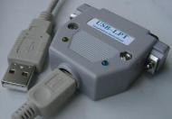

Keywords: USB, LPT, parallel, parallel port, printer port, converter, adaptor
Attention: Using USB2LPT with programming devices may lead
to wrong or bad programmed chips!
The reason is lengthening of the programming pulse due to
longer parallel port access emulation time. The result depends on
|
|
Attention 2: Although using USB2LPT with programming devices
is obvious, it is generally not recommended.
Programing times are much too long to get ready.
At the top I measured that the GALEP software needs some minutes(!)
for programming the smallest PIC (12F508). PCMCIA and CardBus parallel adapters do not have this disadvantage. For ExpressCard, you must have the right type: PCIe based, not USB based. |
-P lpt1 for specifying port address,
even when Windows XP' device manager lies and says „LPT3“.
AVRDUDE uses only 3 fixed port addresses for the names:lpt1 = 0x378
lpt2 = 0x278
lpt3 = 0x3BC
set XIL_IMPACT_ENV_LPT_BASE_ADDRESS=378 (according to setting of USB2LPT in Device Manager)
set XIL_IMPACT_ENV_LPT_ECP_ADDRESS=778 (always LPT_BASE + 400h)
Evaluated settings:
digitalio('parallel','lpt1'); should run now